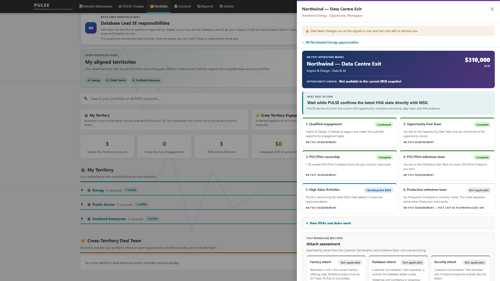
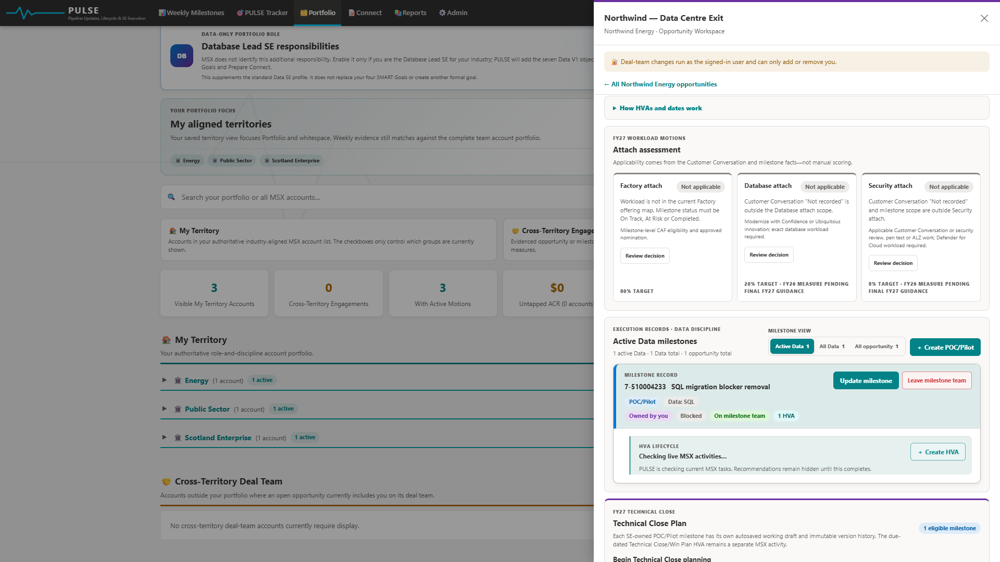
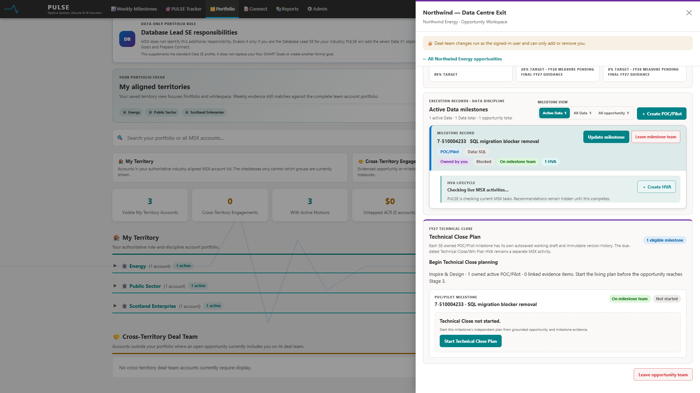

PORTFOLIO & OPPORTUNITY WORKSPACE
Every technical decision, connected to the exact opportunity.
PULSE moves from territory and account context into a complete execution record: opportunity value, role, team coverage, readiness gates, attach decisions, milestone ownership, HVA evidence and the Technical Close lifecycle.

THE PORTFOLIO MODEL
See the territory without losing the customer structure.
The Portfolio page separates authoritative territory alignment from cross-territory deal-team work, while preserving parent, child and legally distinct accounts. That gives every PULSE measure and recommendation a clear population.
- Aligned territories: save the industry and territory groups that define the everyday portfolio lens.
- Complete evidence scope: Weekly retrieval can still match the full signed-in account portfolio rather than only the visible filter.
- Account hierarchy: expand parent and child organisations without merging records that MSX keeps legally distinct.
- Cross-territory engagement: retain opportunities where the SE contributes through deal-team membership outside the aligned patch.
- Untapped ACR: expose open opportunity value and solution areas where relevant technical engagement is missing.
WHY IT MATTERSThe SE can explain exactly which accounts and opportunities are included before acting on any score, recommendation or update.

THE OPPORTUNITY WORKSPACE
Open the signal and see the whole technical story.
The workspace is not a summary card. It is the operating surface for the exact MSX opportunity, combining commercial context with the technical actions and evidence needed to progress it safely.
Customer, title, stage, ACR, solution area and signed-in-user role establish the record being reviewed.
Deal-team, milestone-team, POC/Pilot ownership, HVA, attach and Technical Close states remain visible together.
Join or leave actions affect only the signed-in user and require an explicit user action.
Factory, Database and Security applicability comes from milestone and customer-conversation facts—not invented scoring.
Switch between active discipline milestones, all discipline milestones and the complete opportunity population.
POC/Pilot ownership, HVA work and Technical Close remain connected rather than becoming disconnected tasks.

Attach decisions with visible reasoning
Each attach card shows applicability, the authoritative evidence required, the target context and the review path. A “not applicable” state is a governed decision with an explicit reason—not a hidden denominator change.

Milestones and HVA in the same execution record
See milestone ownership, status, blocker state and team coverage, then create or inspect HVA against the active technical delivery record. PULSE checks live MSX activities before recommending new work.
Technical Close starts before the close becomes urgent
Every eligible SE-owned POC/Pilot has its own autosaved working plan and immutable version history. PULSE preserves the distinction between the living Technical Close plan, its review and sign-off lifecycle, and the separate closing HVA activity recorded in MSX.
FROM SIGNAL TO OUTCOME
One workspace supports the complete technical lifecycle.
PRODUCT WALKTHROUGH
See Portfolio and Opportunity Workspace in action
This walkthrough uses the current Production interface with a fabricated customer, opportunity, milestone and commercial values.
Portfolio to Technical Close
Territory view, account hierarchy, opportunity readiness, attach, milestones, HVA and Technical Close.
WORK THE OPPORTUNITY IN PULSE
Request access, then open the signed-in Production Power App.
My Access adds you to the governed Production group. Once assigned, move from portfolio context to the exact technical execution record without losing evidence, ownership or user control.